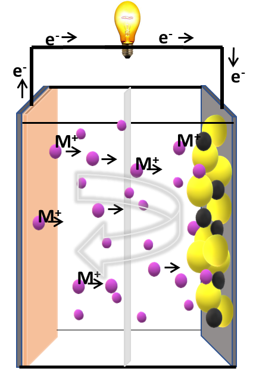

High Energy Rechargeable Batteries
We explore post-Li ion battery chemistries that can surpass the energy limits of today's rechargeable batteries. High-energy electrode materials such as sodium, magnesium, aluminium, and zinc are abundant and low-cost. By controlling the structural and chemical aspects of these materials, we design novel battery materials and develop battery prototypes. Equal emphasis is given to understanding structure-property relationships through state-of-the-art characterization tools.